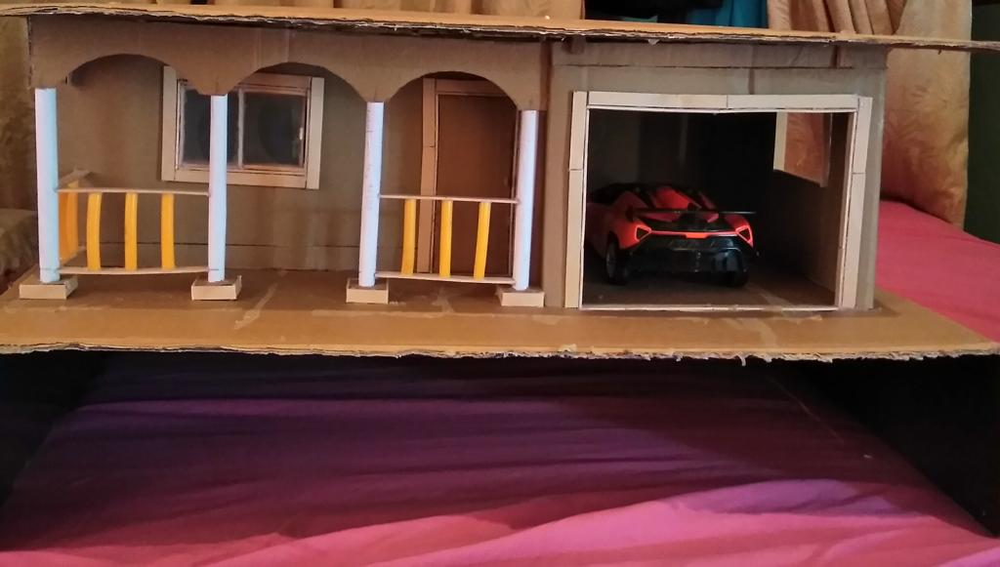

Click image above for email client.
Moral Development refers to the changes in moral beliefs as a person grows
older and gains maturity. A person`s moral development is strongly affected by factors
such as:
Religious development often goes hand in hand with moral development. Children's concepts of divinity, right and wrong, and
who is ultimately responsible for the world. These children are shaped by their family and by the religious social group to which
each child belongs. Their concepts also mirror cognitive moral developmental stages.
I am Creative, Determined and disciplined
To demonstrate these strengths, I will show an image of a project i did few years back...
To develop myself physically i go to the gym to maintain a good physique.
In the book 'Twelve pillars' by Jim Rohn
The book blends together the fundamental principles and teachings of Jim Rohn
I discovered three lessons:
Goal setting is deciding where i want to go and then designing a plan to get there. I learnt that setting a goal will stretch me and make me do things differently to get to the future that i want, and also not to wait on people to set goals for me.
Everyday has many oppurtunities, but only one best oppurtunity. The best oppurtunity is the one that alines with my goals. I learned that i can suffer from the pain of decipline or the pain of regret and the difference is that dicipline weighs ounces and regret weighs tons.
I learned that i should never join an easy crowd; if i want to grow. I have to go where the expectations are high. I should look for relationships with people that will push me, challenge me, and encourage me to become better.